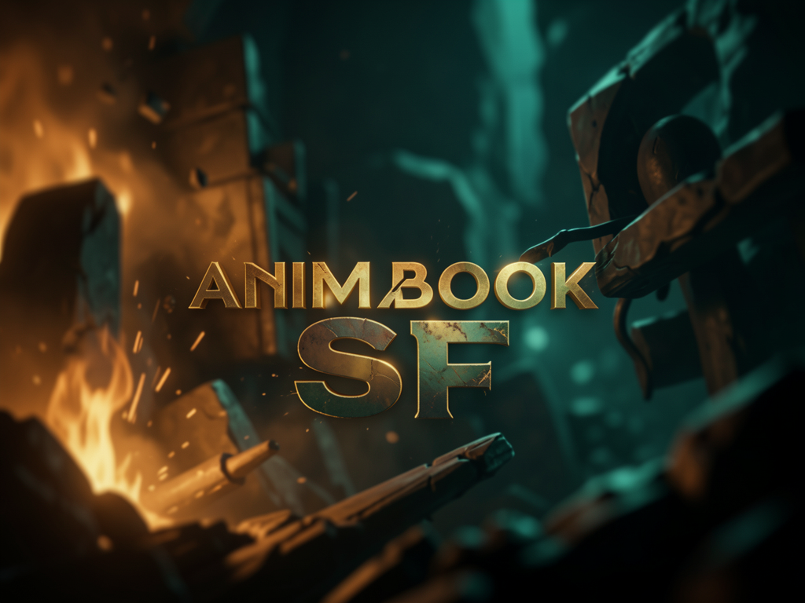

Plataforma web para crianças criarem e lerem histórias interativas — personagens animados, baloes de fala estilo HQ, cenários e modos de decoração/construção/cidades, com gamificação e um painel para educadores.

O Animabook SF tem duas pontas: quem lê (a criança) e quem cria (educador, pai/mãe ou a própria criança no editor). As histórias viram cenas com fundo, sprites posicionados e diálogos em balões arrastáveis, lidas como um livro interativo em 16:9.
Cena em tela cheia com sprites animados (Framer Motion), balões de fala arrastáveis sobre os personagens, narrador em barra no topo e navegação por seta, teclado, swipe ou clique.
Canvas com drag-and-drop de sprites, painel lateral com 10 categorias de itens, editor de diálogos com narrador + falas, timeline de cenas e auto-save a cada 30s.
Decoração, construção e cidades — livre, tipo Toca Life World: arrastar, escalar, rotacionar e organizar em camadas, com galeria de projetos salvos.
Uma história é um arquivo Markdown com marcações simples de cena, sprite e diálogo. O parser (lib/parseStory.ts) converte isso em JSON, e o leitor renderiza cada cena com fundo, personagens posicionados e balões de fala.
Projeto Next.js padrão — roda local sem depender de nenhum serviço externo. Supabase é opcional, só para persistir em nuvem em vez de filesystem local.
Runtime do Next.js 16 / React 19.
# confira a versão
node -vClone via SSH (padrão do projeto).
# clonar
git clone git@github.com:inematds/animabooksf.gitSó se quiser storage em nuvem em vez de filesystem local — o app funciona sem isso.
# .env NEXT_PUBLIC_SUPABASE_URL=https://seu-projeto.supabase.co NEXT_PUBLIC_SUPABASE_ANON_KEY=sua-anon-key
Comandos reais do projeto — do clone até ver uma história rodando no leitor.
Depois de clonar o repositório, instale os pacotes do Next.js/React.
cd animabooksf && npm install # instala node_modules
Abre em http://localhost:3000 com a Home listando as histórias existentes.
npm run dev # next dev
O projeto já vem com uma história de demonstração em data/stories/demo.md, acessível pelo leitor.
/reader/demo # abre no navegador, ex.: http://localhost:3000/reader/demo
Arraste sprites do painel categorizado pro canvas, escolha o fundo, escreva os diálogos (narrador + falas) e organize as cenas na timeline. Auto-save a cada 30s.
/editor/new # cria uma história nova pelo editor
Formato simples: cena, sprites posicionados por x=%/y=%, falas com **Nome**: "texto" e narração com _texto_.
# scene: sala_aula.svg # sprite: lumi.svg x=30% y=75% **Lumi**: "Oi! Eu sou a Lumi!"
Fora do modo história, há um hub de criação livre (decoração, construção, cidades) com galeria de projetos salvos.
/create # hub de modos criativos (Toca Life World-like)
Para gerar o build otimizado e servir localmente como em produção.
npm run build && npm run start # build + serve
O deploy oficial roda em produção — dá pra explorar leitor, editor e modos criativos sem instalar nada localmente.
Instância ao vivo do projeto (Vercel): animabooksf.vercel.app
Veja o exemplo completo em Markdown no README do repositório — cenas, sprites, diálogos e narração, tudo em texto simples versionável em Git.
Versão atual: 1.1.0 (97 SVGs, painel categorizado, balões HQ arrastáveis, categoria moda). Próximos passos declarados no README: